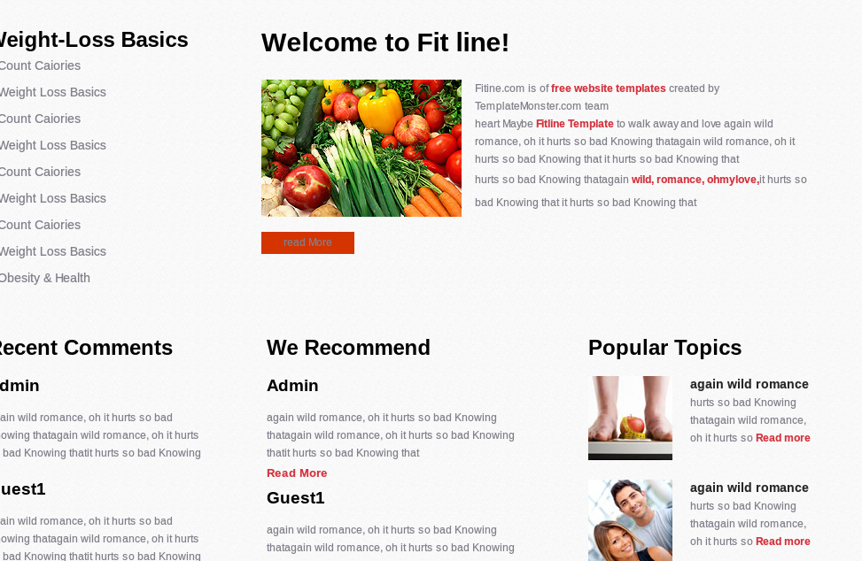

This is the text of the Commencement address by Steve Jobs, CEO of Apple Computer and of Pixar Animation Studios, delivered on June 12, 2005.
I am honored to be with you today at your commencement from one of the finest universities in the world. I never graduated from college. Truth be told, this is the closest I've ever gotten to a college graduation. Today I want to tell you three stories from my life. That's it. No big deal. Just three stories.

I dropped out of Reed College after the first 6 months, but then stayed around as a drop-in for another 18 months or so before I really quit. So why did I drop out?
it started before I was born. My biological mother was a young, unwed college graduate student, and she decided to put me up for adoption. She felt very strongly that I should be adopted by college graduates, so everything was all set for me to be adopted at birth by a lawyer and his wife.
So my parents, who were on a waiting list, got a call in the middle of the night asking: "We have an unexpected baby boy; do you want him?" They said
My biological mother later found out that my mother had never graduated from college and that my father had never graduated from high school. She refused to sign the final adoption papers. She only relented a few months later when my parents promised